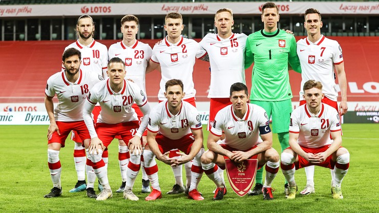
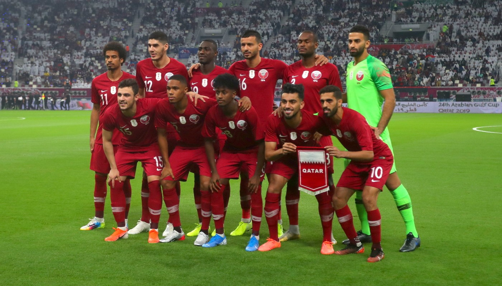

Rozpoczęcie mundialu:
MŚ 2022 w Katarze zostaną przeprowadzone na przełomie listopada i grudnia. Po raz ostatni mają zagrać w nich 32 reprezentacje. Wciąż nie znamy 3 ostatnich uczestników. Tradycyjnie zapewniony udział miał Katar jako gospodarz.
| 1 koszyk | 2 koszyk | 3 koszyk | 4 koszyk |
|---|---|---|---|
| Katar | Meksyk | Senegal | Kamerun |
| Brazylia | Holandia | Iran | Kanada |
| Belgia | Dania | Japonia | Ekwador |
| Francja | Niemcy | Maroko | Arabia |
| Argentyna | Urugwaj | Serbia | Ghana |
| Anglia | Szwajcaria | Polska | Szwecja/Ukraina/Walia |
| Hiszpania | Stany Zjednoczone | Korea | Zjednoczone Emiraty Arabskie/Australia/Peru |
| Portugalia | Chorwacja | Tunezja | Kostaryka/Nowa Zelandia |

